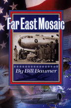

|
Introducing |
 | |||||
|
Introduction As many of you are well aware, the 91st Squadron recently had their Year 2002 Reunion in Savannah, GA. One of the highlights of that reunion was the presence of Bill & Betty Baumer. Bill spoke to the gathering of his experiences of being shot down over North Korea as he served as a check pilot orienting a new reconnaissance crew to 91st Squadron combat operations. Reunion participants were moved and impressed by his presentation and delighted to learn that Bill had authored two books relating to his experiences. His first publication, “The Extended Mission of Stardust Four Zero,” provides a minute-by minute, day-by-day account of the shoot-down, being captured and spirited into Communist China for an ordeal that would last about two and a half years. His second book is a fact-based novel that creates a story that will interest and please any reader; but, it is a must-read for any person who ever served at Yokota Air Base Japan and especially those who served with the 91st SRS. In all truth, I have never read a book in my entire life that drew me into a story so fully that I just could not put it down. The book’s title is “Far East Mosaic.”
First, permit me to introduce Bill by quoting from “About the Author, Bill Baumer”. taken from the overleaf from his book Far East Mosaic. “During WW II the author instructed Pilots in B-17’s and B-29’s. Following separation, collage and a Bachelor’s Degree in Mechanical Engineering, he returned to active duty early in the Korean War, and volunteered for assignment as a combat Aircraft Commander in RB-29’s, flying out of Japan. Promotion to rank of Major brought assignment as Squadron Operations Officer. Soon, he received a new Stateside assignment, but prior to leaving, he flew a combat mission on the night of January 12, 1953 as voluntary Instructor Pilot. The plane was shot down near the Yalu River. The crew was captured and imprisoned in China for two and a half years during which they were falsely ‘tried’ for acts of ‘espionage’, and were sentenced to terms ranging from four to ten years, depending upon rank. Two years after hostilities ceased, they were released. During the internment, the author spent eight months in a Chinese hospital, fourteen months in solitary confinement, and seven months with other crew members. The author had been wounded and suffered severe frostbite. After treatment at Walter Reed Army Hospital, he was medically retired from the Air Force in 1956, after which he counseled in secondary education, retiring again in 1983.”
You will find three additional pages of information relating to Bill Baumer’s experiences and publications in this section. 2) Page 2 relates to a further introduction relating to his book 3) Page 3 provides additional information relating to his fact-filled novel, 4) The fourth page provides specific instructions on how you can order one or both of these publications directly from Bill. You will be doing yourself and those you choose to share these stories with a real favor by making these books a part of your history library collection. Chuck Stone
End of Page 1, Introduction Go to Return to Extended WW II, or to |
||||||